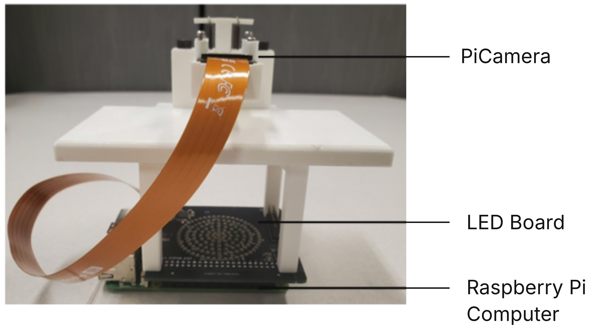

A $150 microscope that can see malaria
Fourier ptychography builds one sharp image out of many blurry ones, each lit from a different angle. Our three-person team built a 3D-printed version around a Raspberry Pi, aimed at malaria diagnosis where a lab microscope isn’t affordable. I owned the hardware.
- LED illumination board
- Off-the-shelf LED matrices flickered even at full brightness, which ruins image capture. I designed a 2-layer board with about 150 addressable LEDs in a ring layout, an STM32 and 3.3 V to 5 V level shifting, sized to sit on top of the Pi. It went through three revisions.
- Firmware and control
- C firmware on the STM32 and a Python library on the Pi talk both ways over SPI, setting LED patterns and brightness and stepping through lighting sequences in sync with the camera.
- Microscope body
- I redesigned the 3D-printed body in Onshape over five-plus iterations to line up the lens, sensor and aperture, and worked out the aperture size so it takes in light from the outermost LEDs while blocking reflections from the rest of the board.
We imaged malaria parasites inside red blood cells, and later cut the parts cost to about $150 CAD. The work is part of a paper in Proc. SPIE (2024), where I’m a co-author.



- Where
- Robarts Research Institute, Western University
- My part
- Hardware, firmware, CAD, imaging tests
- When
- Summers 2023 and 2024
- Status
- Published, SPIE 2024